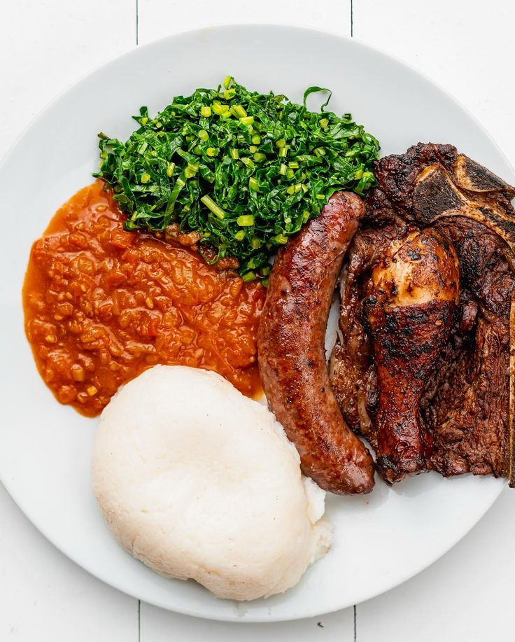

Moboku ya Mboka
Propose une solution efficace à tout congolais
de partout dans le monde.
Prise de contact direct avec restaurants congolais et marchés africains , via le site.
Nous mettons en contact tout congolais nouveau arrivé à un pays etranger, avec les restaurants congolais du pays, ainsi que les marchés africains. Nous proposons aussi des services coaching, pour ceux qui aurait oublié comment cuisiner certains plats congolais, ou qui aimeraient apprendre à faire la cuisine congolaise.